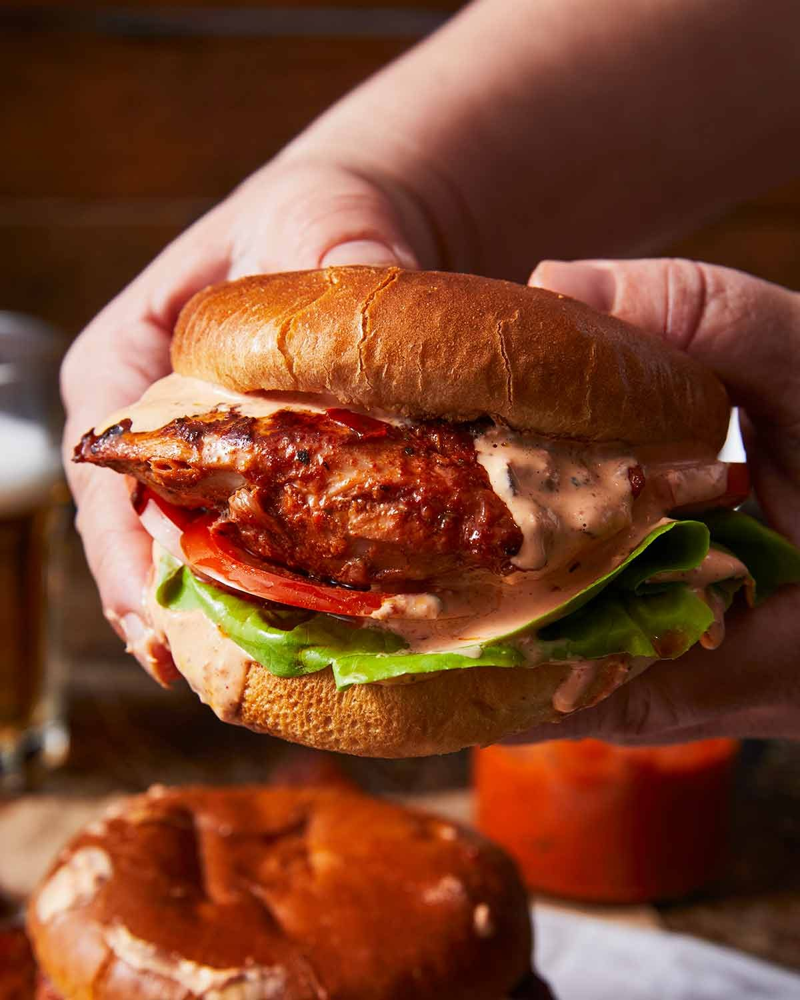

Peri Peri Chicken Burger Recipe - RecipeTin Eats

A homemade Peri Peri Sauce does double duty as the marinade for the Portuguese style grilled chicken and to make a
tingly creamy Peri Peri “Perinaise” pink sauce. Excellent for summer BBQs!
Ingredients for Nando's Peri Peri Sauce Recipe
- Birds Eye Chillis
- Capsicums
- Garlic Cloves
- Malt Vinegar
- Olive Oil
- Spices
- Red Food Colouring (optional)
Ingredients for Peri Peri Chicken Burgers
- Chicken Breasts or Thighs
- Peri-Naise Sauce
- Burger Rolls
- Lettuce
- Tomatoes
How to Make Nando's Peri Peri Chicken Burger
- Pound and Trim Chicken
- Cover the chicken breast/thighs with go-between, a freezer bag or double layer of
cling wrap, to protect it from tearing when you pound.
- Pound to 1cm/0.4" thickness using a meat mallet or rolling pin.
- Cut the chicken into burger-sized pieces that are a little larger than the buns.
Factor in 20% shrinkage!
- Make the Burgers
- Peri Peri Sauce - Blitz all the ingredients until smooth using a stick
blender, food processor, or blender. It won't be completely smooth, but it
shouldn't have hard lumps in it.
- Peri-naise Sauce - Use 3 tablespoons of the Peri Peri Sauce and mix it
with the sour cream and mayonnaise to make the Peri-naise.
- Marinade the Chicken - Use 1/2 cup of the Peri Peri Sauce to marinade
the chicken. Marinade for at least 3 hours, up to 24 hours. (Even 48 hours
is fine, I just find beyond 24 hours I don't notice any difference).
- Cook the chicken - on the stove or BBQ on medium heat, or medium high
if your stove is on the weaker side. Don't cook it on too high a heat else
the marinade stuck on the
chicken will completely burn! We just want
some authentic flame-grilled chargrilled sports on the chicken, without
making it completely black.
Rest: Once cooked, rest the chicken for 3-5 minutes before
assembling the burger. This step allows the juices inside the chicken to
be re-absorbed into the meat fibres so you have lovely juicy chicken.
Don't skip this step!
- Assemble burger - Here's my assembly order: Peri-naise slathered on
the base, then top with lettuce, tommato, and the chicken. Then I slather
with more Peri-naise and a heaping dollop of extra Peri Peri sauce.
- Eat! Pop the lid onto your burger then sink your teeth into it!